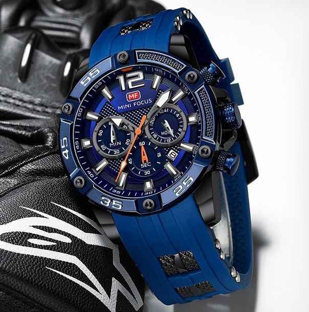
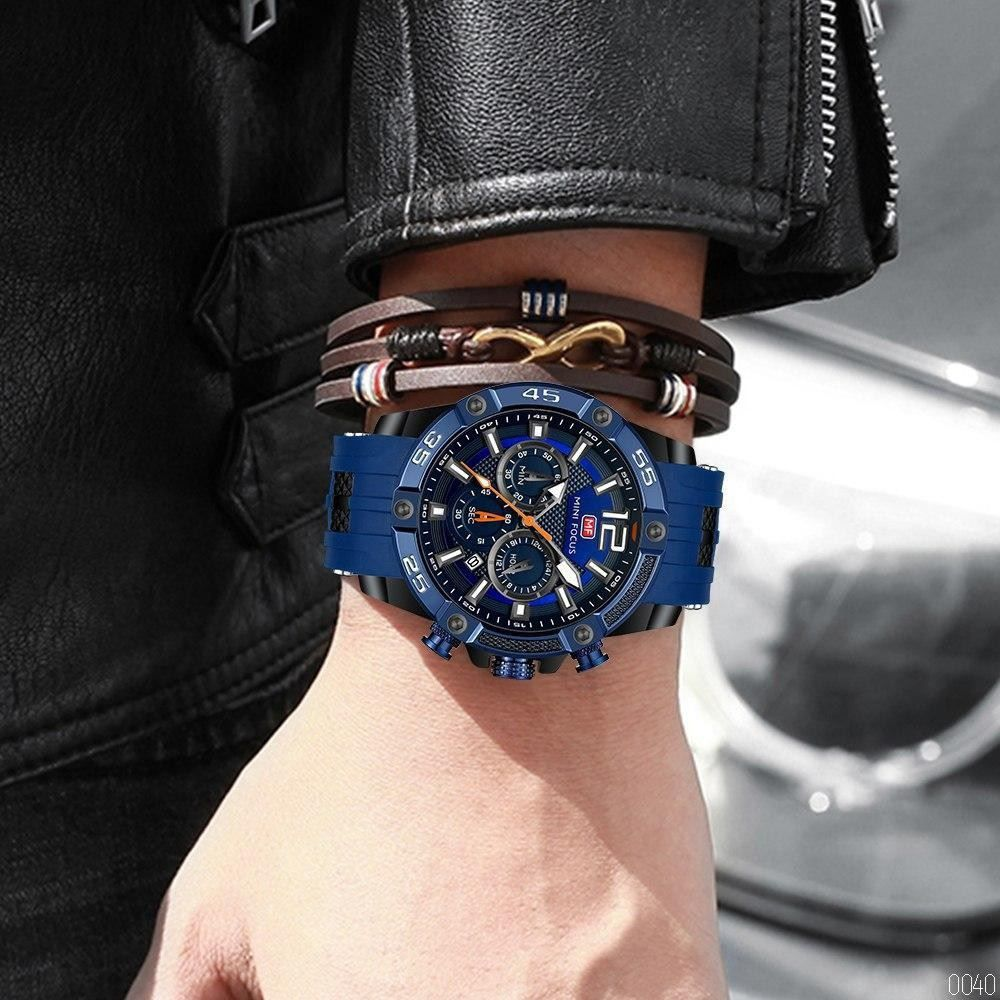
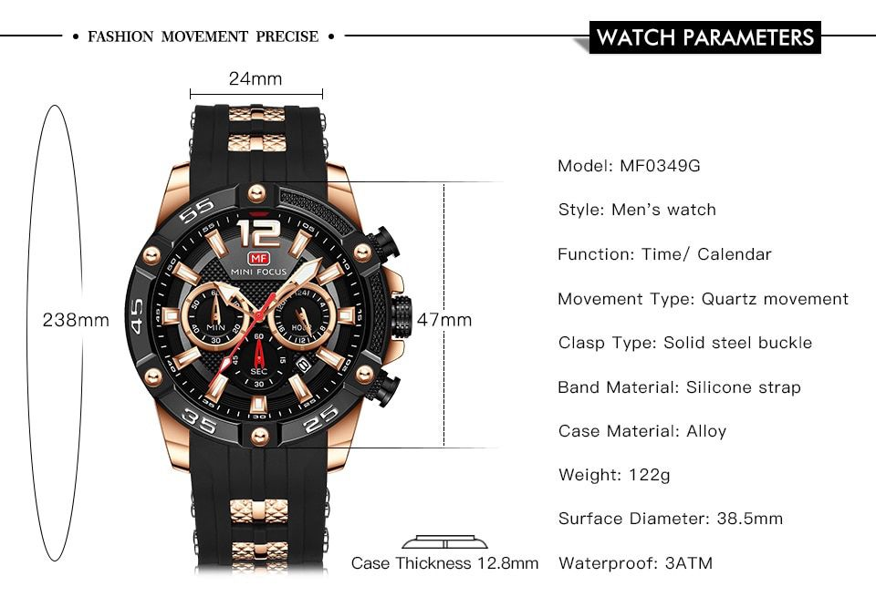
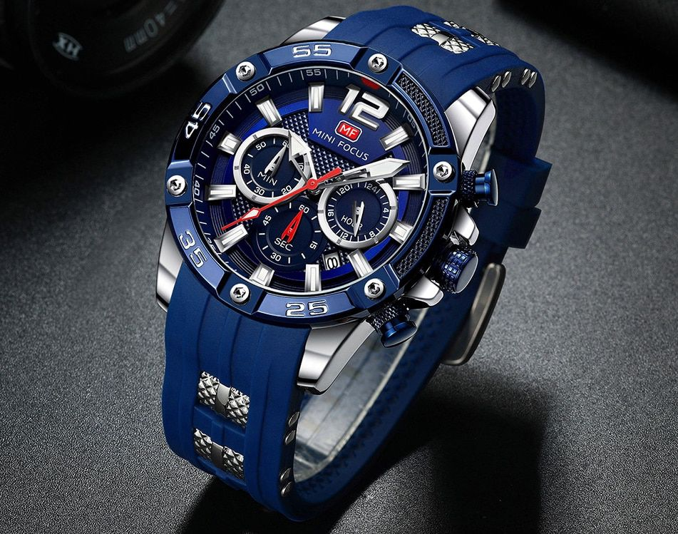

   
R 999
Are you in the market for a sporty rugged type of watch but yet a watch that can fit any occasion? Do you consider yourself a man with a great taste? If your answers to both these questions are “Yes” then we have the perfect watch for you! I present to you another member of the MINIFOCUS range. The MINIFOCUS Men’s Analog Quartz Sports Silicone Strap Wristwatch. This watch comes with 3 multifunction dials showing timeless charm and excellent quality. It has a 24-hour sub-dial, minute sub-dial, second sub dial and comes with a calendar window. It has a high-quality alloy watch case with a shining plating colour and a quality stainless steel case back with an engraved brand logo. The watch strap is of high-quality silicone for high breathability and comfortable wearing. The watch also has luminous hands that function to glow continually after absorbing light and is waterproof for those “emergencies only” situations. If you like what you have read then look no further. Make the purchase and enjoy!
| -Style: Fashion & Casual |
| -Water Resistance Depth: Bars |
| -Characteristic: Auto date |
| -Band Material Type: Silicone |
| -Weight: 122g |
27 iterm